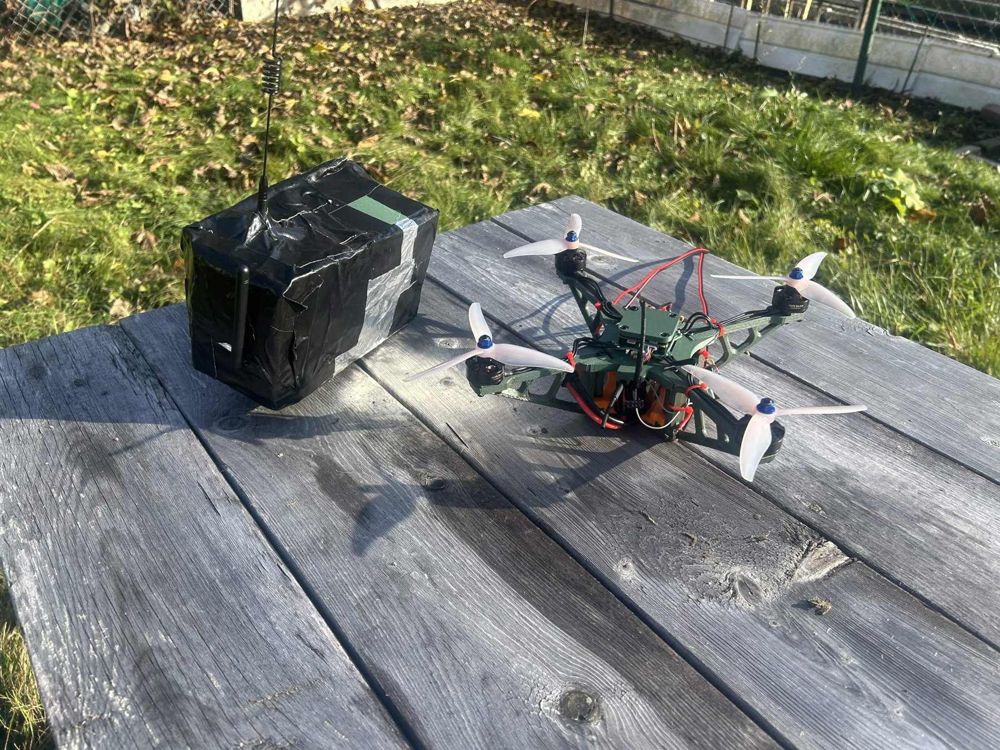
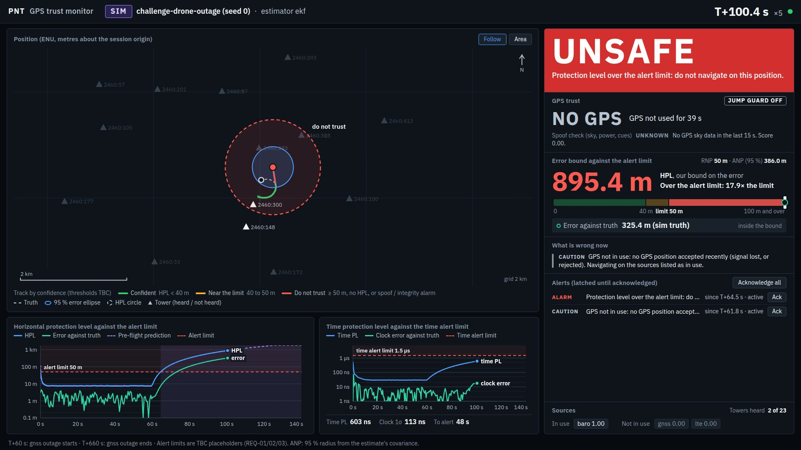
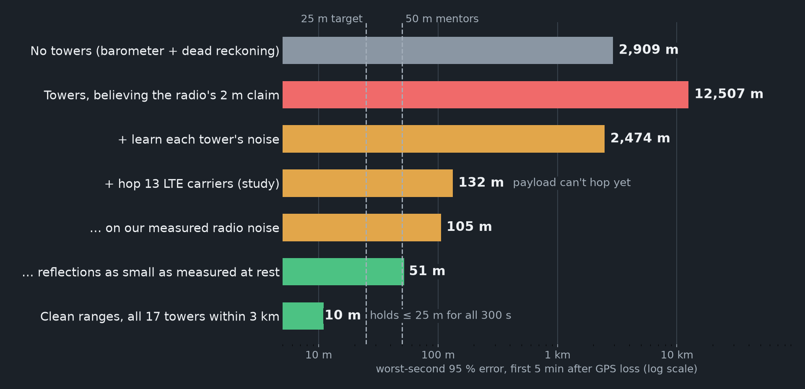
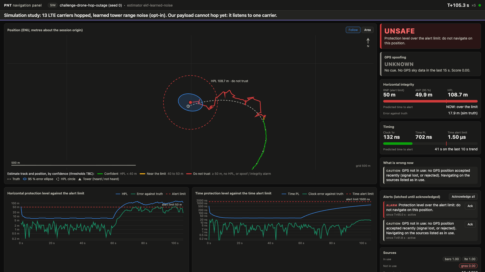
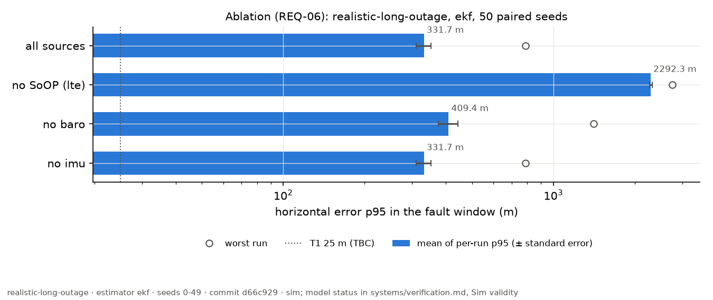
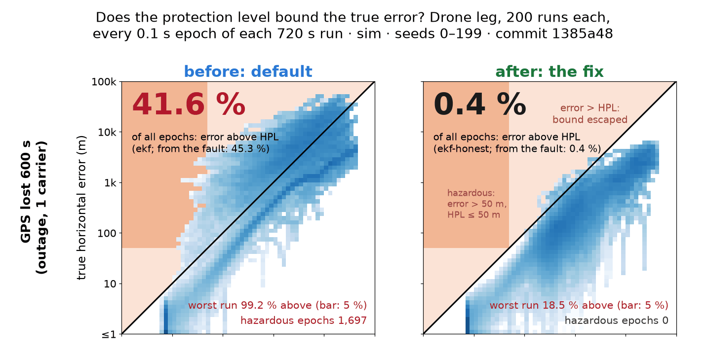
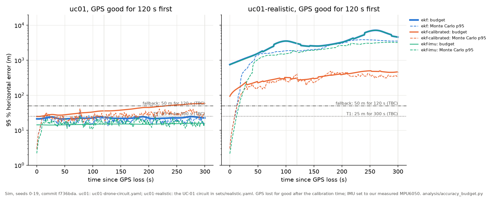
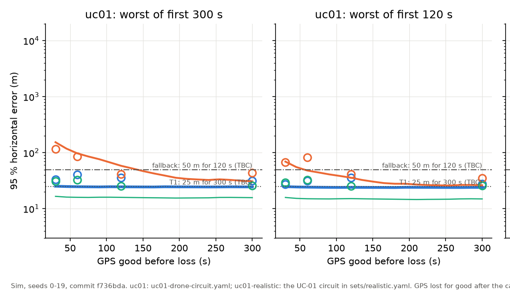
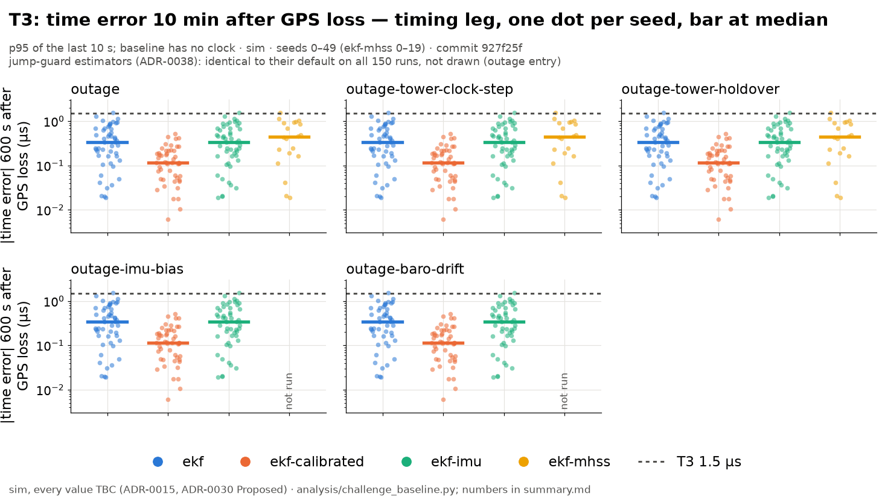

| Document | D1 Engineering Architecture |
| Team | Team 12 |
| Revision / date | 1.1 · 12 November 2026 |
| Configuration baseline | Repository main at ffb201ae; each result names its own commit |
| Principal use cases | Keeping the aircraft navigating (navigation continuity); telling the operator how far to trust it (status and confidence monitoring) |
| Companion deliverables | D2 live demonstration; D3 roadmap to a product |
The challenge asks for a navigation solution that keeps position and time accurate when GPS is degraded or unavailable, uses communication signals (such as cell towers) as the main technology, and gives crews and drone operators a number that says how reliable the position and time are. This document is the engineering architecture (D1). The live demonstration (D2) and the roadmap to a product (D3) are separate.
SEAN has two parts. A small payload on the aircraft (a Raspberry Pi with two low-cost radio receivers, a GPS receiver, a motion sensor and a pressure altimeter) records what it hears. A ground station (a laptop) turns the cell-tower signals into distances, combines them with the other sensors to estimate position and time, works out how wrong that estimate could be, and shows the result live.
The design puts trustworthiness first. Three ideas set it apart from published work on navigating with cell towers:
| Capability | Status | Evidence |
|---|---|---|
| Detecting and refusing a GPS position jump (spoofing) | Verified (sim) | Jumps of 20 m to 500 km flagged in 1.1 s. With our guard, moments of dangerously wrong output per run fall from 5,244 to 3 (50 runs) |
| Stated uncertainty stays honest after GPS loss | Verified (real) Partial (sim) | Real recordings, GPS removed in software: the stated bound was never smaller than the true error (0 of 3,005 checks; standard filter: 1,025). Simulation: bound exceeded 0.45 % of the time, target 0.1 % |
| Keeping time without GPS; detecting faked time | 49 of 50 runs | 0.44 µs average error after 10 min (target 1.5 µs; worst run 1.55 µs). A clock being dragged at 50 ns/s is caught in 3.3 s |
| Position from towers after GPS loss | Not met on payload | Simulation: 105 m with every improvement, 10 m with clean tower signals. Real recordings are limited by the receiver (§7.5) |
| Live monitoring | Demonstrated | Operator panel updating at least once a second (D2) |
| Never transmits; privacy | Verified | No transmit path; enforced by automated tests |
| Asked for (challenge brief and judging criteria) | Section |
|---|---|
| Engineering architecture for the proposed solution | §3, §4, §5 |
| Use cases: navigation continuity; status and confidence monitoring | §2, §4, §5 |
| Communication signals as the main technology | §4.2, §6.1, §7.4 |
| Numbers that tell crews and operators how reliable position and time are | §5 |
| Problem, users, constraints, assumptions, success measures | §2 |
| Calculations and trade-offs | §5.1, §6, §7.7, §7.9 |
| Testing, evidence and limitations; how the simulation matches reality | §7, §9 |
| Safety, radio regulation, aviation, privacy, cybersecurity; no interference with the radio spectrum | §8 |
| Traceable, reproducible documentation | §10 |
| User | Situation | Threats | What they need |
|---|---|---|---|
| UC-01 Drone operator | Inspection or delivery drone on an urban route, below 120 m | Jammers in nearby vehicles; spoofing aimed at drones; buildings blocking GPS | A position that stays on the route through an outage, and a warning before it drifts off |
| UC-02 Crew on approach | Aircraft approaching an airport | Regional jamming that also corrupts other aircraft's position broadcasts; spoofing near conflict zones | Continued position with a confidence figure the crew can act on, in their usual terms |
| UC-03 Timing user | Radio or satellite terminal that takes its time from GPS | Jamming forces it to run on its own clock; time spoofing shifts the clock without moving the position | Time that stays accurate for a while after GPS is lost, an honest uncertainty, and detection of faked time |
| Requirement | How success is measured (TBC unless noted) | User | Result |
|---|---|---|---|
| REQ-01 Keep navigating after GPS loss | 95 % of runs within 25 m for 5 min after GPS is lost (mentors' fallback: within 50 m for 2 min); within 556 m on approach | 01, 02 | Not met payload as built 449 m (sim); 105 m with every improvement; 10 m with clean tower signals (§7.4) |
| REQ-02 A protection level on every position | The true error stays inside it 99.9 % of the time; no dangerous moments | 01, 02 | Partial real recordings: always inside; simulation: inside 99.55 % of the time, no dangerous moments (§7.6) |
| REQ-03 Keep time after GPS loss | Within 1.5 µs after 10 min; the stated uncertainty covers the error at least 68 % of the time | 03 | Partial 49 of 50 runs; stated uncertainty covers 99.5 % (§7.8) |
| REQ-04 Detect GPS that lies | A 20 m jump within 2 s (agreed with mentors); a slow 2 m/s drag within 30 s; a 50 ns/s time drag within 60 s; at most 1 false alarm per hour | all | Met jumps 1.1 s, time drag 3.3 s, 0 false alarms. Not met slow drag: 127 s at best |
| REQ-05 Live monitoring | Position, protection levels, per-source status, at least once a second | all | Met (D2) |
| REQ-06 Cell towers carry the solution | Removing towers hurts more than removing any other sensor | all | Met without towers +1,961 m; without altimeter +78 m; without motion sensor +0 m (sim) |
| REQ-07 Listen only | No way to transmit, in hardware or software | all | Met checked by an automated test |
| REQ-08 Privacy | No message content decoded; Wi-Fi device IDs scrambled when recorded | all | Met |
| REQ-09 Any carrier | Same recording format and processing on every carrier | all | Partial standing and walking recordings |
| REQ-10 Reproducible | Every result can be regenerated from the repository | all | Met |
Mentor guidance (10 November): for the drone, within 50 m for about 2 minutes would be acceptable, with the calculation explained; the confidence level is ours to choose and should be shown several ways; how long GPS is available before it is lost matters; test position jumps first.
| ID | Assumption | Why, and status |
|---|---|---|
| ASM-01 | GPS works and can be trusted at start-up, for long enough to learn the towers | The tower clocks and noise levels are learned while GPS is good. About 150 s is enough (§7.7). TBC |
| ASM-02 | Tower locations come from the public ISED licence database | Our receiver reads a tower's short ID, not its full identity, so we look the location up. A wrong entry is one of the faults we check for (§5.2) |
| ASM-03 | Jamming and spoofing are only simulated or added in software | We never transmit |
| ASM-04 | The payload's clock is kept within 1 µs of GPS time while GPS works | Measured: within 35 ns on average, 364 ns spread |
| ASM-05 | Navigation is mainly horizontal; height comes from the altimeter | Small-drone flight. TBC |
| ASM-07 | Local FM and TV transmitters are all on one hill | So they cannot give a position fix; towers have to. TBC |
The payload only records; all processing happens on the ground. A simulated flight, a replayed recording and the live radio link all feed the same software, so anything tested in simulation runs unchanged on real data (Figure 1).
| Function | Part | Notes |
|---|---|---|
| Computer, recorder | Raspberry Pi 4B | Both radios on the slower USB 2 ports; the USB 3 ports are left empty because they emit noise near the GPS frequency |
| Cell-tower radio | NooElec NESDR SMArt v5 (a USB software radio), Bingfu antenna | Listens to one LTE channel at a time, 1.92 million samples a second: enough to capture the sync signals every tower sends (§4.2) |
| Aircraft-broadcast radio | AirNav FlightStick | Receives ADS-B, the position reports aircraft broadcast on 1090 MHz |
| GPS and timing | GPS add-on board with external antenna | Position, satellite signal strengths, and a once-a-second timing pulse that keeps the Pi's clock on GPS time |
| Motion, height | MPU6050 motion sensor, BMP180 pressure altimeter | Motion-sensor noise measured overnight on the bench |
| Storage | USB drive | The SD card lost 2.9 % of the radio samples; the USB drive lost none |
| Carrier | Hand, car, small quadcopter | The drone is flown by a pilot with a physical kill switch; the payload never controls it |
| Part | What it does | How it was checked |
|---|---|---|
| Input | Delivers readings in time order from a simulation, a recording or the live link, in one common format | Automated test on all three |
| Tower signal processing | Finds towers by their sync signals and measures when each signal arrives; outputs 10 distance readings a second per tower. Only sync signals are read, never content | Synthetic signals; 15 real recordings |
| Tower lookup | Matches each tower's channel and short ID to one licensed site in the ISED database. If there is no match, or more than one, the tower is ignored rather than guessed | Database audit (4,059 entries); real recordings |
| GPS health | A jamming indicator from how strong the four strongest satellites are | One 10-minute real recording |
| Filter | Combines everything into position, time and their uncertainty (§4) | Simulation; real recordings |
| Checks | Protection levels and fault checks (§5) | Simulation; faults added to real recordings |
| Operator panel | Live browser panel; shows NO DATA if the stream stops | Live demonstration (D2) |
| Simulator | Simulated flights, sensor errors (each labelled with where its size came from), and a library of attacks; can also add faults to real recordings | §7.2 |
All software exchanges one kind of record per reading. Each record holds: when it was valid (GPS time, nanoseconds); which sensor produced it; what kind of value it is (a distance, a position, an acceleration…); which transmitter it came from (for a tower, its channel and short ID; Wi-Fi IDs are scrambled); the value; the sensor's own estimate of its uncertainty; and extras such as signal strength. The output record holds position, speed, their uncertainty, our clock offset and its uncertainty, the protection levels, the status (nominal, degraded, unsafe), how much each source is trusted, and any warnings. Recordings are stored as a log file plus the raw radio samples and a description file. The live link is encrypted and only accepts registered laptops.
The mentors described the mission as: GPS works at the start, then is lost or degraded in one area. SEAN uses the good period to learn the towers, carries on with towers, altimeter and motion sensor when GPS is lost, refuses GPS that is caught lying, and lets GPS back in only once it agrees again (Figure 2).
Every LTE cell tower continuously broadcasts two short, publicly specified sync signals so that phones can find it and line up with its timing. Our receiver searches the recorded radio samples for these signals. Each pattern identifies the tower by a short ID (one of 504), and the moment it arrives tells us, after allowing for clocks, how far away the tower is. We output ten distance readings a second per tower. Only the sync signals and public broadcast fields are processed; no traffic or message content.
The short ID is not unique across a city, and our receiver cannot read the tower's full identity (that needs a wider radio). So we look up the channel and short ID in the ISED licence database and keep the tower only if exactly one licensed site matches. When the receiver loses a weak tower and finds it again, we treat the new track as a fresh start with its own unknown offset, because we found that weak towers keep producing readings after the receiver has actually lost them.
The filter keeps a running estimate of everything that affects the measurements, and how uncertain each part is:
Each tower reading is modelled as:
The random noise level is not taken from the radio, which under-reports it; the filter estimates it for each tower from how far that tower's readings land from where the filter expected them, starting from a cautious 40 m. The altimeter gives height; the motion sensor helps predict movement where it is used. A GPS position is accepted only if it is close enough to the prediction to be explained by normal noise (a statistical test that wrongly rejects an honest reading 1 time in 1,000). If only the GPS height disagrees, which happens when the altimeter drifts with temperature, the horizontal position is still used.
Why track the slow error? On real recordings our radio's distances jitter by only 0.73 m on strong towers, but drift by a median 8 m over a second, and the radio reports neither. A filter told only the small jitter believes each reading far too much and becomes over-confident: after GPS loss its stated radius was too small 45 % of the time in simulation, and 34 % of the time on real recordings. Tracking the slow error fixed both (§7.6).
Each tower has its own clock. To turn arrival times into distances, the filter must know each tower's clock offset and drift. It learns them while GPS is good, because then position and time are known.
A spoofed GPS can drag other sources with it: other aircraft report positions from their own GPS, and towers set their clocks from GPS. Counted naively, a single fake could look like three sources agreeing. So each source is put in one of three groups, and only sources that are independent of GPS are allowed to confirm it.
We considered a simpler two-group split (independent or not). We rejected it because it would throw away tower locations, which stay valid when GPS is faked even though tower clocks do not.
Known gap: a spoofer powerful enough to fake GPS time over a wide area, taking the towers' clocks with it, could only be caught by our own free-running clock. This case is outside the current design.
The software contains several versions of the filter, so improvements can be tested against each other on the same runs. The names in brackets are the ones used in the code and results.
| Version | What it does differently | Status |
|---|---|---|
Simple reference (baseline) | A deliberately basic filter, used as the yardstick | for comparison |
Standard (ekf) | Tracks position, speed, our clock, each tower's clock and the radio's clock. On real recordings it uses our measured noise levels instead of the radio's own figure | default |
With learned tower clocks (ekf-calibrated) | Adds the network grouping of tower clocks and the learn-while-GPS-is-trusted rule (§4.4) | optional |
With motion sensor (ekf-imu) | Uses the motion sensor to predict movement between readings | optional |
With learned noise (ekf-learned-noise) | Estimates how noisy each tower really is from its readings, instead of trusting the radio's figure | optional |
Honest filter with jump guard (ekf-honest-guard) | Learned noise, plus the slow error per tower (§4.3), plus the jump guard (§5.3). This is the version we recommend | optional |
Cross-checking (ekf-mhss) | Runs extra copies of the filter, each leaving out one group of sources, and raises an alarm if they disagree (the literature calls this solution separation) | optional |
With ground station (ekf-base) | Subtracts a fixed ground receiver's view of the same towers, which cancels the tower clocks | simulation only |
How the recommended version was chosen: the rule was written before testing. A version had to keep the true error inside its radius at least 99 % of the time on both real and simulated test data; among those, the lowest real error after 5 minutes won, provided it was no more than 5 % worse in simulation and produced no dangerous moments. We then tried seven further tweaks (different slow-error sizes, motion-sensor prediction, process settings, requiring several towers, consistency checks, outlier down-weighting, freezing the learning) and none beat it.
The filter knows how uncertain its position is in every direction. The protection level is a radius large enough that the true position falls outside it only with a stated, tiny probability. We use a probability of 1 in 10 million per update (TBC).
Why 5.68: a horizontal error has two directions (east and north). For such an error the chance of landing outside a circle of k standard deviations is e−k²/2, so 1 in 10 million needs k = 5.68. Our code first used 5.33, the value for a one-direction error, which actually gives about 7 in 10 million; we found and fixed this ourselves. Time has one direction, so 5.33 is right there. The alert limits are 50 m (drone), 556 m (approach) and 1.5 µs (timing).
The cross-checking version computes its radius differently: from all the extra filter copies, with a prior chance of failure assumed for each group of sources (a single tower 1 in 1,000; a whole tower network 1 in 10,000; a whole sensor type 1 in 10,000; GPS 1 in 1,000; all TBC).
| Failure | Examples | Checked by |
|---|---|---|
| GPS is wrong | Jammed, spoofed position, faked time; other aircraft's reports go wrong with it | The distance check on each GPS reading (§4.3); the jump guard (§5.3); the sky check (§5.4); a check for GPS time being dragged; the cross-checking filter copy without GPS; the warning from other aircraft (§5.5) |
| One tower is wrong | Its clock jumps; its database location is wrong; a fake tower copies its ID | Cross-checking copies that leave out each tower; fresh offset when a tower is re-found; an optional check of GPS movement against the towers |
| A whole tower network is wrong | The network's own timing fails or is captured | Cross-checking copy that leaves out that network |
| A whole sensor type is wrong | Altimeter drift, motion-sensor fault | Cross-checking copy that leaves out that sensor type |
| Ground station is wrong (sim) | Moved, clock jump, link lost | Consistency check on the ground station |
When a spoofer suddenly moves the GPS position, the filter's normal check rejects the fake reading. But while GPS is rejected, the filter's own uncertainty grows, until eventually the same fake reading looks plausible and is accepted. A spoofer only has to wait. The jump guard closes that gap:
The guard does not use the filter's uncertainty to decide when to let GPS back, because that uncertainty is exactly what grows while the spoofer waits. Known gap: GPS that returns after it has been off for more than 2 seconds is not judged by the guard (§9).
We know where every GPS satellite should be in the sky at our time and place (from published orbits). Two clues point to a fake. Hard clue: a satellite received with a signal although it should be below the horizon, seen twice in a row. Soft clue: with at least five satellites, the signal strengths are suspiciously equal (spread under 3 dB), or do not follow the pattern where higher satellites are stronger. A fake transmitted from one antenna tends to make all satellites look alike. The soft clue is switched off during jamming, which also flattens strengths. The clues are combined into a level of unknown, suspect or spoofed. This check is advisory: it is shown to the operator and does not change the position.
Aircraft broadcast their position with an accuracy and integrity rating (ADS-B). If an aircraft that was reporting good ratings drops to poor ones for 5 seconds, or its reported track jumps by more than 300 m, that suggests interference near it. When two aircraft within 50 km show this, or one shows a confirmed jump, we raise a warning for 300 seconds. While the warning is up, the cross-checking filter treats GPS as much more likely to fail (1 in 10), which widens our radius before our own GPS is affected. We never take a position from these broadcasts, because they come from the other aircraft's own GPS.
| Status | When (drone limits, TBC) | What the operator should do |
|---|---|---|
| NOMINAL | Radius under 40 m and no source flagged | Navigate on this position |
| DEGRADED | Radius 40–50 m, or a source flagged (for example GPS refused, or GPS height ignored) | Usable; prepare for loss |
| UNSAFE | Radius 50 m or more (the alert limit), or no radius available | Do not navigate on this position |
The checks act through the estimate: a refused source is flagged (DEGRADED), and without it the filter's radius grows until it crosses the limit (UNSAFE). The sky check and the warning from other aircraft are shown separately and do not change the status by themselves. Alerts stay on screen with their start time until acknowledged. For an approach, the panel also shows the position's 95 % radius against the approach requirement; for timing, the time protection level and how long until it reaches its limit.

| # | Shows |
|---|---|
| 1 | Status, in colour and words |
| 2 | Protection radius against the alert limit |
| 3 | 95 % radius against the approach requirement |
| 4 | Whether GPS is trusted |
| 5 | Sky-check level and clue |
| 6 | How much each source is trusted |
| 7 | Time protection level, time to its limit |
| 8 | Map with the radius, track coloured by confidence |
| 9 | Radius over time, with a pre-flight forecast |
| 10 | Alerts, kept until acknowledged |
Every decision below was written down at the time with the options considered (§10). The chosen option is in bold.
| Signal | For | Against | How we use it |
|---|---|---|---|
| Cell towers (LTE) | Everywhere, strong, at fixed licensed locations. Their sync signals are public and narrow, so a cheap radio can measure them. In a published lab test, jamming them took about 1,000 times more power than jamming other parts of the LTE signal | Their clocks follow GPS; one channel hears few towers; a slow error the radio does not report; the full tower identity needs a wider radio | Main source |
| Aircraft broadcasts (ADS-B) | Position and quality of every equipped aircraft | Comes from their GPS, so fails with it; not authenticated; spoofed aircraft have been seen still reporting good quality | Early warning only |
| VOR beacons | Independent of GPS | Our receiver never locked on; poor geometry near the ground | Software built, not relied on |
| Wi-Fi | Dense in cities | Short range; easy to fake; measuring distance requires transmitting | Not used for position |
| Iridium satellites | Strong, global; our radio can hear them | Published fixes from their open signals are 100–200 m, standing still, after minutes; not authenticated; a paid service already exists | Simulated; next layer in the roadmap |
| Starlink | Many satellites | Using it properly needs a terminal that transmits | Simulated |
| Broadcast time signals | Independent time | Canada's CHU stopped in June 2026; the US WWVB needs a special receiver; FM radio time is only to the minute | Not used |
| Decision | Options considered | Why we chose it |
|---|---|---|
| What to focus on | Best accuracy; trustworthiness first; jammers or satellites as signals | Accuracy-only repeats published work; jammers and satellites could only be simulated. Trustworthiness serves all three users |
| How to test spoofing | Transmit fake GPS; add it in software | No risk to the radio spectrum; adding faults to real recordings still tests real receiver data |
| Where to process | On the aircraft; record raw, process on the ground | Recordings can be re-processed as the software improves; one program for simulation, recordings and live |
| Tower clocks | Each tower independent; one clock per network; own offset per tower, shared drift per network, learned while GPS is trusted; ground station only | Independent towers can't be cross-checked; one clock per network is wrong because towers keep their own offsets; a ground station needs extra hardware and fails if its link drops |
| Who can vouch for GPS | Everyone; two groups; three groups | Three groups keep tower locations while stopping tower clocks from vouching for GPS |
| After a GPS jump | Normal check only; refuse until it jumps back; refuse for the rest of the flight; let back in when the filter's uncertainty allows | Runs with dangerous moments: normal check 49 of 50; uncertainty rule 46 of 50; ours 3 of 50, with honest GPS back in 0.1 s. Refusing for the rest of the flight never lets honest GPS back |
| Keeping the radius honest | Multiply the radius after GPS loss; add generic uncertainty; track the slow error per tower | A multiplier hides the real problem and only fits the cases it was tuned on; generic uncertainty widens the radius everywhere; tracking the slow error matches what we measured |
| Radius multiplier | 5.33; 5.68; 6.0 (aviation SBAS value) | 5.68 follows from our stated probability for a 2-D error; the SBAS value belongs to that system's own budget |
| Sky check | Positions only; strengths only; both, advisory; both, and drop GPS | Each clue alone misses some fakes or false-alarms indoors; dropping GPS on a soft clue costs accuracy; the jump guard already acts |
| Other aircraft's broadcasts | Treat GPS as more likely to fail; graded; trust GPS less in the position; display only | Widens the radius early without letting another aircraft's GPS steer ours |
| Ground station | None; build it; simulate now, build later | Best accuracy after GPS loss in simulation (677 → 332 m), but it follows a spoof without a guard; parts not available in time |
| Payload | One Pi or Pi plus a microcontroller; USB drive or SD card | One board means one clock for all sensors; the SD card dropped 2.9 % of radio samples |
| Part of the simulation | Where its numbers come from | Status |
|---|---|---|
| Motion-sensor noise and drift | Overnight recording on the bench | measured |
| Tower distance jitter | 15 real recordings: 0.73 m on strong towers, up to 22 m on weak ones | measured |
| Tower slow error | Same recordings: 2–17 m, median 8 m. It stays when comparing two antennas on the same mast, so it is not a clock | measured |
| Payload clock | Timing pulse on the payload | measured |
| GPS position and strengths | Standing recordings | partly |
| Towers heard per channel | 1–4 in real recordings; antenna placement changed signal strength by more than 25 dB | partly |
| Tower clocks, reflections while moving, altimeter | Published values | assumed |
| Attacks | Added in software, to simulations and to real recordings | assumed |
Comparing simulation and reality with the same tool showed that the first simulation got the tower error wrong: it had 49 m of fast random jitter, while reality has 21 m of slowly wandering error. That finding is what led to tracking the slow error (§4.3). Faults added to real recordings: a 300 m GPS jump was caught 0.6 s after it started; a faked sky was flagged in 59 of 59 reports, and none of 120 genuine reports was flagged.
| Target | Result | Kind | Verdict |
|---|---|---|---|
| GPS jump of 20 m or more caught within 2 s | 1.1 s, 50 of 50 | sim | Met |
| No dangerous moments from a held jump | 0 with the guard; 17,042 without | sim | Met (optional) |
| Delayed replay of real GPS | 1,995 wrong moments per run → 0 with the guard | sim | Met (optional) |
| Radius never smaller than the error after GPS loss | 0 of 3,005 checks; standard filter 1,025 | real | Met (optional) |
| Error inside the radius 99.9 % of the time | 99.55 % overall; worst single run 81.5 % | sim | Not met |
| Time dragged at 50 ns/s caught within 60 s | 3.3 s, 50 of 50 | sim | Met |
| At most 1 false alarm per hour | 0 per hour, every filter and scenario | sim | Met |
| Towers matter most | +1,961 m without towers; +78 m without altimeter; +0 m without motion sensor | sim | Met |
| Warning of interference on approach | 50 of 50; 48–78 s before reaching it; 1.94 false warnings per hour | sim | Met |
| Time within 1.5 µs after 10 min | 0.44 µs average; 1.55 µs worst | sim | 49 of 50 |
| Approach within 556 m | approach-area towers are made up | sim | Not scored |
| Within 25 m for 5 min | payload as built 449 m; every improvement 105 m; clean signals 10 m | sim | Not met |
| Slow 2 m/s drag caught within 30 s | 0 of 50; 50 of 50 after 127 s if the radio could switch channels | sim | Not met |
"Optional" means the result comes from the recommended filter version, which is not yet the default in the code.



| Measured (two 10-minute standing recordings, GPS as truth) | Value |
|---|---|
| Time the best tower is strong enough to use | 43 % (other towers 0.6–6.6 %) |
| Time any two towers are usable together | 0–1.4 % |
| Towers needed at once for a position (two directions plus our unknown clock) | 3 |
| Distance jitter on strong towers | 0.73 m |
| Weak towers after the receiver loses them | keep producing readings 1.5–12.9 km wrong, while claiming 21–31 m accuracy |
| Position 5 min after GPS is removed in software: standard filter / without towers | 364–595 m / 0.6–1.3 m |
| Published result with a research-grade receiver on a drone, 3 towers | 8.15 m (Shamaei, Khalife and Kassas, 2018) |
The limit on real data is our receiver. One low-cost radio on one channel rarely hears more than one usable tower at a time, and a position needs three. So on standing recordings the towers do not yet beat simply staying put on the altimeter. The radius, however, stays honest on the same data (§7.6). The fixes are hearing more towers at once (a radio that switches channels, or more radios), measuring reflections while moving, and then measuring the signal's phase with a better clock (D3).




Average 0.44 µs; 49 of 50 runs within 1.5 µs (worst 1.55 µs). The stated uncertainty covers the real error 99.5 % of the time. A GPS clock being dragged at 50 ns per second is caught in 3.3 s (4.1 s worst), with no false alarms. On the real payload, the clock follows the GPS timing pulse to within 35 ns on average.
Because tower clocks follow GPS, they are only used to catch a wrong GPS time, never to confirm it. On the harder scenarios the stated time uncertainty is too small; this is listed in §9.
| Version (15 attacks × 50 runs) | Error at worst moment, 5 min after loss | Error inside radius, worst run | Dangerous moments, held jump | Time unavailable |
|---|---|---|---|---|
| Standard | 677 m | 69.2 % | 17,042 (20 of 50 runs) | 14.9 % |
| Standard + jump guard | 677 m | 69.2 % | 0 | 19.3 % |
| Honest filter + jump guard (recommended) | 449 m | 100 % | 0 | 19.1 % |
| Cross-checking | 677 m | 100 % | 0 | 100 % |
| Ground station + motion sensor (sim only) | 332 m | 100 % | 68,537 (49 of 50) | 12.4 % |
The recommended version gives up some availability for safety: refusing a faked GPS turns 17,042 dangerous moments into honest "do not navigate" ones (unavailable 14.9 % → 19.1 % of the time). The cross-checking version is never wrong because, with today's tower model, it never claims a small enough radius to be usable. The ground station is the most accurate after GPS loss but has no jump guard yet and follows a held jump.
Sources: systems/results.md; analysis/results/ folders headline (commit 24aa5d1), honest-bound, stacked-fixes-measured, tower-count, lte-gps-truth-20261111, lte-measured-noise, real-replay-256, final (d66c929). Results made before the 5.68 correction used 5.33; with 5.68 every radius is 6.5 % larger, so the error can only fall inside it more often.
| Area | Approach |
|---|---|
| Radio spectrum (ISED) | The payload has no radio that can transmit, and the software has no transmit path (checked by an automated test). Jamming and spoofing exist only in software. Nothing we did can interfere with licensed spectrum. |
| Interception law | We only read signals meant for everyone (sync signals and public broadcast fields), never message content (Radiocommunication Act s.9(2)). We found no ruling on whether taking timing from them counts as "use", so a legal opinion is needed before selling. |
| Privacy | Wi-Fi device IDs are scrambled when recorded. The panel does not show where a recording was made. |
| Cybersecurity | The link between payload and laptop is encrypted and only accepts registered laptops. Every source, including towers and the ground station, is treated as something that can be wrong. Tamper-evident logs are planned. |
| Flight | Flown by a pilot with a physical kill switch; the motors stop if the radio link is lost; maximum throttle is limited and the throttle is made less sensitive around hover; low, close and over open ground; checklist before each flight. The payload never controls the aircraft. |
| Aviation role | Advisory: it warns, it does not steer. We found no certification standard for this kind of navigation (the relevant aviation standards cover GPS equipment), so we make no certification claim. |
| Hazard | How it is handled |
|---|---|
| A wrong position shown as safe | Status follows the radius; refused sources make the radius grow; the slow-error tracking keeps the radius honest; alerts stay until acknowledged |
| A spoofer waits for GPS to be let back in | The jump guard lets GPS back only when it jumps back, not when the filter's uncertainty has grown |
| A tower is wrong (clock jump, moved, fake copy) | Per-tower and per-network checks; ambiguous towers ignored; fresh offset when a tower is re-found |
| Faked time that also drags the tower clocks | Tower time can only contradict GPS time, never confirm it; a wide-area attack of this kind is a known gap |
| Tower clocks learned while GPS was secretly faked | Learning needs agreement from sensors independent of GPS, and is discarded if GPS is later flagged |
| Interference ahead of the aircraft | Other aircraft's broadcasts raise a warning that widens the radius early |
| Limitation | Effect | Planned fix (D3) |
|---|---|---|
| One low-cost radio on one channel | Rarely three usable towers at once; REQ-01 not met on the payload | A radio that switches channels, or more radios; then signal-phase measurement with a better clock |
| Only standing, ground-level recordings | Reflections while moving and reception at altitude (tower antennas point down) not measured | Recordings while moving, with independent truth; flight recordings |
| Slow 2 m/s GPS drag | Caught in 127 s at best, not 30 s | Hear more towers; tower-based drag check with channel switching |
| Radius honesty per flight | 99.55 % overall but 81.5 % in the worst run; the probability is per update, with no defined exposure time | Fault statistics from hours of tower data; define the exposure time |
| GPS returning after a long outage | Not judged by the jump guard; the normal check may wrongly refuse honest GPS after a large drift | A rule for letting GPS back after long outages |
| Time uncertainty on hard scenarios | Stated too small | Revise the clock model |
| Two faults at once; wide-area time spoofing | Outside the design | Multi-fault checks; an independent time source |
| Approach use case | Approach-area towers are made up; not scored | Real tower geometry near an airport |
| Ground station, satellites | Simulation only | Build the station with a jump guard; add the Iridium layer |
The repository holds the requirements, assumptions, risks, safety case, test plan, data-format definitions and 57 written decision records next to the code. Every result names the scenario or recording, the random seeds and the code version it came from. 1,485 automated tests run before any change is merged, including tests that enforce the listen-only and privacy rules.
| Record | Decision | Status |
|---|---|---|
| 0001 | The payload only listens | Accepted |
| 0002 | Record raw on board, process on the ground | Accepted |
| 0004 | Simulation, recordings and live data share one input format | Accepted |
| 0007, 0008 | Log format; GPS-time timestamps and east-north-up metres | Accepted |
| 0009, 0026 | Live link; encrypted, authenticated link | Accepted |
| 0011 | Privacy enforced when recording | Accepted |
| 0013 | Iridium satellites simulated, not received | Accepted |
| 0015 | Simulation calibrated against real measurements | Accepted |
| 0018, 0042 | One-Pi payload; radio samples to a USB drive | Proposed; Accepted |
| 0020 | Ground reference station (simulation only for now) | Proposed, amended |
| 0021 | Trustworthiness first; signals of opportunity can fail | Accepted |
| 0022, 0023 | Tower clock model; tower identity from the ISED database | Proposed |
| 0024 | Three groups by dependence on GPS | Proposed |
| 0027 | Browser-based operator panel | Accepted |
| 0031, 0033 | Jamming indicator; warning from other aircraft | Proposed |
| 0034 | Targets after the mentors' answers | Accepted |
| 0036, 0039 | Measured tower error; learned tower noise | Proposed |
| 0037, 0040 | Tower-based drag check; channel switching as a study | Proposed |
| 0038 | Refuse a GPS jump until it jumps back | Proposed |
| 0041 | Sky check | Accepted |
| 0045, 0046 | Use GPS horizontally when only its height disagrees; track the slow error | Proposed |
| 0047, 0050 | Our clock in the tower readings; handling real tower recordings | Accepted |
| 0052 | Keep the honest filter after field comparison | Proposed |
| 0056 | Radius multiplier 5.68 | Accepted |
| Topic | Location in the repository |
|---|---|
| Requirements, users, assumptions, risks | systems/requirements.md, use-cases.md, assumptions.md, risks.md |
| Data formats | systems/icd/ |
| Test plan and results | systems/verification.md, systems/results.md, analysis/results/ |
| Safety and threats | systems/safety.md, systems/threat-model.md |
| Roadmap (D3) | systems/roadmap.md |
| ADS-B | Position reports that aircraft broadcast | LTE | 4G mobile network standard |
| HPL / TPL | Horizontal / time protection level (§1.5) | RNP | Required navigation performance (an aviation accuracy standard) |
| IMU | Motion sensor (accelerometers and gyroscopes) | SoOP | Signals of opportunity: signals sent for another purpose, used for navigation |
| ISED | Innovation, Science and Economic Development Canada (licenses radio transmitters) | VOR | Ground radio beacon used in aviation |
| LEO | Low Earth orbit (satellites such as Iridium, Starlink) | µs / ns | Microsecond / nanosecond |